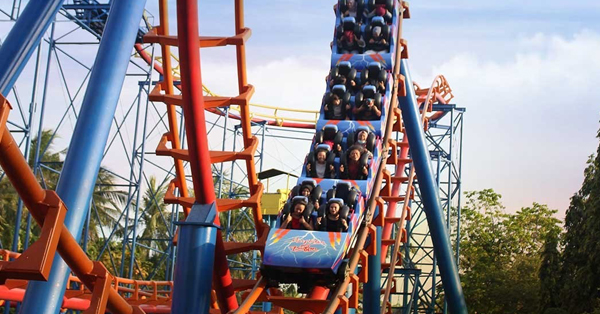
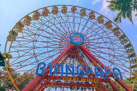
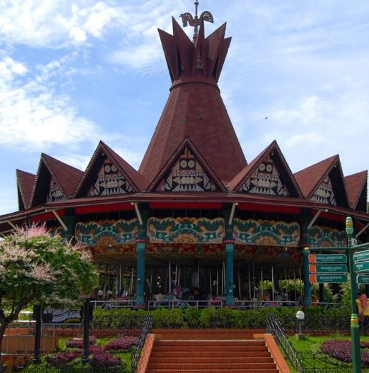
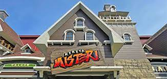
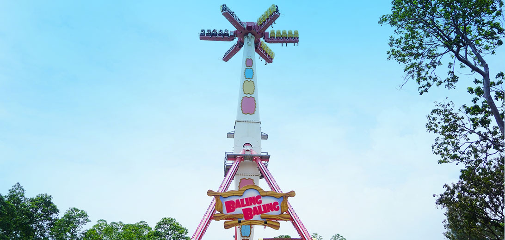
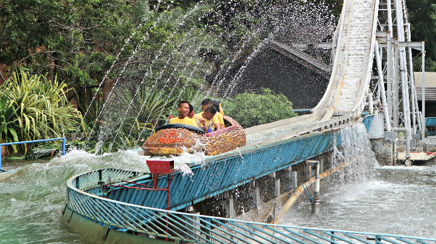
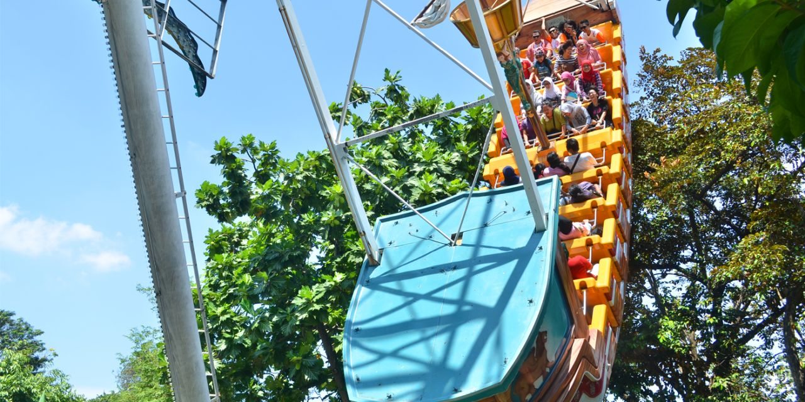
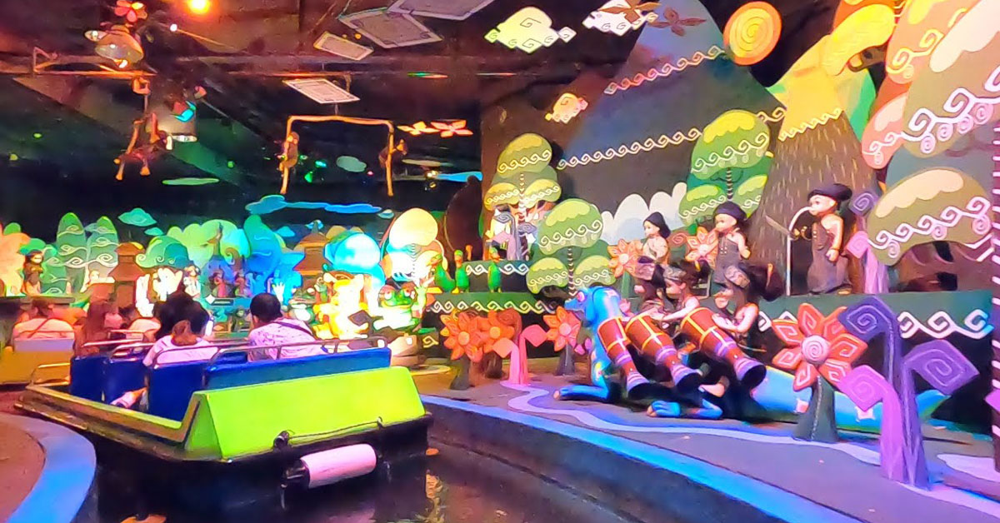
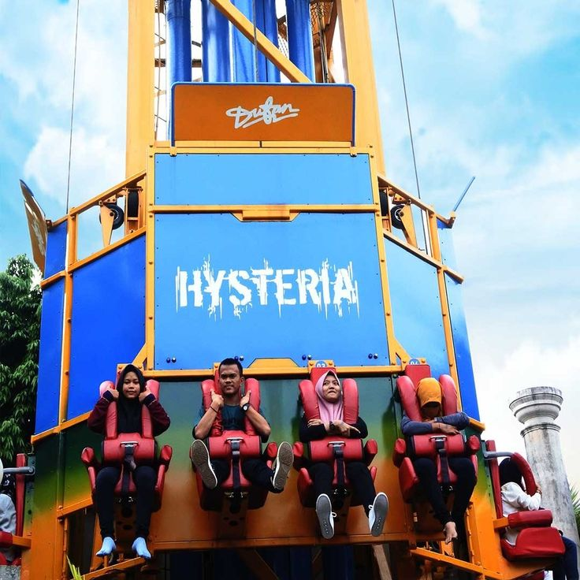

Ada banyak wahana yang populer dan wajib kalian naikin nih saat
bermain ke Dufan, wahana tersebut diantaranya:

Halilintar
Menjadi salah satu wahana favorit dan ekstrim di Dufan, wahana
Halilintar mampu menguji adrenalin Anda untuk bukan hanya
merasakan seluncuran dengan loop 360°, tapi juga lintasan turunan
dan tanjakan yang tinggi dan cukup menikung. Berkapasitas 24
orang, wahana ini mampu membuat Anda serta kerabat dan teman-teman
berteriak histeris untuk melupakan segala kejenuhan dari rutinitas
sehari-hari.

Bianglala
Tak lengkap kunjungan ke Dufan tanpa menikmati wahana Bianglala,
sebuah kincir besar yang siap membawa Anda ke ketinggian ± 30
meter dpl.
Berkapasitas 180 orang, wahana ini tentunya lebih tepat untuk
dinikmati bersama keluarga, teman, dan kerabat. Walaupun dapat
dinikmati kapan saja, tetapi banyak pengunjung yang memilih untuk
menikmati wahana ini di sore hari karena selain dapat menikmati
pemandangan pantai dari ketinggian yang paling atas, mereka juga
dapat menikmati romantisme terbenamnya matahari yang silih
berganti dengan gemerlap lampu-lampu Ancol Taman Impian.

Turangga-Rangga
Wahana Turangga- Rangga adalah sebuah komedi putar yang
dilengkapi dengan 40 kuda tunggangan serta dihiasi ribuan lampu
yang membuat meriah dan semarak dan termasuk wahana klasik di
Dunia Fantasi. Permainan ini akan mengajak pengunjung memasuki
romantisme saat kanak-kanak, sehingga tak heran wahana ini
digandrungi pengunjung segala usia.

Kereta Misteri
Wahana dalam ruang yang mengambil tema suasana Amerika diabad 19. Diakhir perjalanannya, pengunjung
akan dikejutkan oleh sosok Serigala yang besar. Wahana ini berluaskan 5.000 m2 dan dilengkapi oleh 3
rangkaian kereta yang akan jalan bersamaan. Dimana per kereta memiliki kapasitas 20 orang.

Baling-Baling
Baling – baling merupakan suatu wahana baru yang unik untuk kalangan “remaja” yang berada di kawasan
Dunia Kartun. Ketinggian wahana ini mencapai 30 m yang akan menguncang adrenalin pengunjung dengan ayunan
dan putaran ride 360 derajat

Niagara-gara
Wahana Perahu Luncur / Niagara-gara, perahu berbentuk balok kayu yang meluncur bertualang mengikuti
arus air kemudian pada klimaksnya naik setinggi 20 meter dan terjun seolah-olah mencebur mengikuti air
terjun sungai-sungai Amerika.

Kora-kora
Wahana dengan bentuk kapal bajak laut ini perlahan lahan akan berayun, semakin lama ayunannya akan
semakin tinggi hingga kemiringan 90 derajat. Jika dilihat dari kejauhan, wahana ini seperti akan melempar
kapal laut ke atas sehingga terlihat akan lepas namun saat berada di kora-kora akan terasa sensasi seru
dan ketagihan. Konsep permainan ini sama persis dengan permainan ayunan, di mana penumpang akan diayun
maju mundur hingga 90° kemiringan. Wahana ini masih menjadi wahana favorit pengunjung khususnya remaja
sejak pertama kali dioperasikan. Permainan ini berasal dari Jerman dan memiliki kapasitas maksimum 54
orang.

Istana Boneka
Bangunan Istana Boneka ini berarsitektur gaya eropa klasik, dengan menggunakan perahu yang berjalan
diatas air yang mengalir dengan arus yang tenang, kita dapat menjelajahi dan mengapresiasikan budaya etnik
seluruh nusantara maupun kekhasan budaya diseluruh dunia dengan iringan lagu dan 600 boneka animatronik
yang lucu.
Beroperasi sejak tahun 1985 dan asal negara pembuatannya dari Amerika Serikat dengan meiliki kapasitas 336
orang.
Belajar sambil bermain bersama Istana Boneka...

Hysteria
Apakah Anda termasuk salah satu pengunjung yang menggunakan wahana ini untuk menguji adrenalin di
antara kerabat dan teman-teman? Ya, wahana Hysteria merupakan salah satu wahana yang memacu adrenalin
sehingga banyak sekumpulan pengunjung remaja dan keluarga yang menguji adrenalin diantara sesama dengan
menikmati wahana ini lebih dari sekali.
Betapa tidak, wahana berkapasita 24 orang ini mampu membawa anda ke ketinggian 60 meter hanya dalam waktu
4 detik. Jadi, tidak ingin melewatkan wahana ini bukan? Lihat pemandangan menakjubkan dari ketinggian 60
meter yang takkan pernah terlupakan.